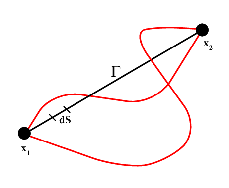
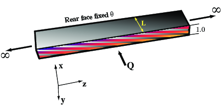
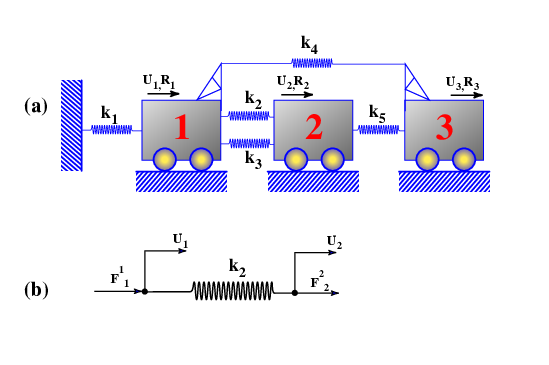

Introduction to the Finite Element Method¶
Prelude to Finite Elements: The Variational Calculus¶
This is something of an aside but it is absolutely necessary to understand the variational method in order to follow how Finite Element Methods work
Example: How Short is a Straight Line ?¶
It’s intuitively obvious that the shortest distance between two points on a plane is just a straight line. To demonstrate this mathematically is more tricky.
In words, the procedure goes like this: of all possible curves between the two points, find one (if it exists) which always becomes longer if it is altered in any way. (Thinking physically, if the points were linked by a rubber band, then to disturb it from the shortest curve would require additional energy, no matter what that disturbance looked like).

We decide, arbitrarily, that we will make \(x\) the independent variable and find a curve \(y(x)\) which satisfies the minimum distance requirement.
The distance along a curve is a path integral:
where
We seek to find \(y(x)\) which minimizes \(S\). First consider the function
where \(\eta(x)\) is an arbitrary function which is differentiable and vanishes at \(x=x_1,x_2\). This is the variation which we apply to some curve \(y(x)\) to see if it gets shorter or longer. Note the notation for the derivative which will be useful as we procede. The optimal path will minimize \(S(\alpha)\), when \(\alpha=0\), i.e.
In our current notation
and
from the definition of \(Y'(x,\alpha)\)
So we now must solve
We integrate by parts to give
The first term on the RHS vanishes because \(\eta\) vanishes at the boundaries. The second term is valid for arbitrary \(\eta(x)\) which implies
which in turn implies \(y'=\)constant, i.e. the equation of a straight line.
The important things to note here are that an integral method can be used to solve a simple geometrical problem and that the method itself includes the boundary conditions as a natural consequence of the way it is set up.
The variational method can be generalized to solve more important problems. In particular, instead of solving each problem as we have for the straight line / distance question above, we solve a generic problem whose solutions we can apply immediately.
Generalisation¶
The general form works like this. To find the function \(y(x)\) which produces a stationary value of the functional
we work through the same procedure as above, and use the same arguments concerning the arbitrary nature of the variation to obtain
This is known as the Euler equation. Hamilton’s principle states that mechanical systems evolve such that the integral
is stationary. Here \(L\) is the Lagrangian of the system which is identified with a combination of the work done on the system and the kinetic energy of the system, e.g. potential energy - kinetic energy.
Application of the Euler equation to each direction independently recovers Newton’s law (\(F=ma\)). In complex geometries and with difficult boundary conditions, the variational form may be easier to solve than the differential or “strong” form. This shows us that there are equivalent integral representations for the standard mechanical equations we are accustomed to using — variational or weak forms versus differential or strong forms.
Although this may seem complicated and of rather theoretical interest, in fact it runs throughout finite element methods, and the concept must be familiar in order to follow how FEM works. Advantages of using variational forms of the equations include:
The simplification of the construction of the governing equations in the sense that scalar quantities — energies, potentials — are considered in place of forces, displacements etc. There is also the possibility that such formulations can be derived more-or-less automatically for previously unknown systems.
Governing equations may be more directly accessible since “unimportant” variables such as internal forces doing no net work do not appear in the variational form.
When dealing with approximate solutions, the variational form often allows a broader range of trial functions than for the standard differential form. This happens because some boundary conditions are implicit in the formulation and hence are not imposed on the trial functions themselves.
Example of Variational Forms for FEM¶
See Klaus-Jürgen Bathe’s book for a more complete outline of this approach to FEM. Although this is not the best text to explain how to implement a finite element code, he does a great job of explaining the link between variational methods and weak forms of various equations of progressively increasing complexity.

The functional governing the temperature in the block of material is
where \(q^B\) is an internal heat generation rate. The fixed boundary condition is \(\theta(L,t) =\theta_i\).
This is our generalized problem with
which produces a stationary functional if
or, in other words
Which we recognize to be the governing differential equation. The variational statement also contains the natural boundary condition
This is a clear demonstration that the standard form of the equations plus certain boundary conditions can be fully wrapped up in integral form and are exactly equivalent to the standard form. The major difficulty is in how we produce the correct functional in the first place, especially if we want to avoid first deriving the differential form of the equations and back-calculating as we done above.
Extension to Approximate Methods}¶
The problem above is simple enough that the integral or differential forms of the equations can be solved directly. In general, however, we anticipate dealing with problems where no closed form of solution exists. Under these circumstances approximate solutions are desirable. In particular, there is a class of approximation methods which use families of trial functions to obtain a best fit approximation to the solution. These naturally develop into finite element algorithms as we shall soon see.
Formulation of a General Problem¶
We consider a steady-state problem characterized by the following strong form
where \({\cal{L}}\) is a linear differential operator acting on the (unknown) state variable \(\phi\) in responce to a forcing function \(f\). Boundary conditions are
The operator should be symmetric
and positive definite
\(\Omega\) is the domain of the operator and \(u\) and \(v\) are any functions which satisfy the boundary conditions.
Consider the 1D example of a bar subject to a steady end load. The response is the solution to
subject to the boundary conditions
We therefore identify
To check symmetry and positive definiteness of the operator we consider \(R=0\) since the operator properties are independent of the actual load. Integrating by parts gives
Application of boundary conditions demonstrates that the operator is symmetric by our definition and it is positive definite as well because:
Suppose we now search for approximate solutions of the form
where \(\Phi_i\) are linearly independent trial functions and the \(a_i\) are the unknown weights for each of the functions.
In weighted residuals methods, the expansion is used directly on the strong form of the equations. \(\Phi_i\) are chosen so as to satisfy all boundary conditions and then we seek to minimize a residual
Least Squares Method¶
Minimize the square of the residual with respect to \(a_i\)
This method produces a symmetric coefficient matrix regardless of the properties of the operator.
Galerkin Method¶
To determine \(a_i\), solve the n equation system $\( \int_\Omega N_i R d\Omega = 0 \;\;\; i = 1,2,\ldots \)\( over the solution domain \)\Omega$. This method produces a symmetric, positive definite coefficient matrix if the operator is symmetric and positive definite.
Ritz Method¶
The Ritz method does not operate on the residual of the strong problem, but minimizes the weak form of the problem with respect to each of the unknown parameters \(a_i\) in the usual variational manner. The trial functions no longer need satisfy the natural boundary conditions of the problem as these are wrapped up in the variational form. (Again, see Bathe for discussion and examples).
The Galerkin method can be extended to include a term which minimizes the violation of natural boundary conditions, and thus permits the use of a wider range of trial functions
However, it does not now necessarily produce a symmetric matrix even for a symmetric operator. However, if the equation (\ref{eq:galerk1} ) is integrated once by parts, it yields a symmetric form and also reduces the order of derivatives inside the integral. This means that the trial functions need be of lower order, and it makes the Galerkin formulation equivalent to the Ritz formulation.
Weighted residual formulations have one advantage: they can be used whether or not there exists a functional corresponding to the particular problem. As a result is used this method is used extensively in constructing finite element methods.
Towards a Matrix Method¶
One of the dominant features of the Finite Element literature is that it is filled with matrix algebra. The fact that differential equations can be rendered into matrices seems at first to be mysterious. However, it results quite naturally from the discretization of the problem, and the parameterization of the discrete equations through a limited set of unknown parameters.
Thus, before getting deeply involved in the arcane lore of Finite Elements, We give one example of a genuinely discrete system and show how it generates a matrix problem quite naturally.

Consider the system illustrated in the figure (a) above — three freely rolling carts attached by springs. There are three loads applied \(R_1,R_2,R_3\), one to each cart, and we wish to determine the equilibrium displacements \(U_1,U_2,U_3\). We can illustrate graphically the equilibrium condition for one of the springs based on its internal degrees of freedom and effective external load. This equilibrium is:
or
This is essentially the same for all five spring elements except for \(k_1\) which is anchored at one end and so satisfies
The equilibrium relations for the system as a whole are
If we now write all five equilibrium relations in terms of all available degrees of freedom we obtain a form like this
which can also be written
in each case.
Thus the global equilibrium requirement of \ref{eq:globeq} become
where
Note, by the way, that \( \mathbf{K}\) is symmetric. An important observation is that
The individual element stiffnesses can be summed to form a global stiffness matrix. A symmetric, positive definite matrix problem can be solved in numerous different ways, many of which are easy to look up in textbooks ! A very simple problem like this has captured much of what we need to do in arbitrarily complex finite element computations. The construction of local element equilbrium problems based on the interaction of each available degree of freedom with every other is followed by the assembly into a global problem by summing the contributions of the individual elements.
Note that the formulation of the local equilibrium conditions are done in a symmetric manner (if we change this degree of freedom how does the balance change, and then what if we change this degree of freedom ?) rather than trying to simplify the system.
The degrees of freedom are related by elastic spring constants here. In our more abstract formulations we will replace spring constants by coefficients obtained from the variational method but the form is {\em exactly the same}.